Every Aruba switch.
On one desk.
…because forty terminal tabs aren't a dashboard.
SwitchDesk logs in to your AOS-CX, AOS-S and Instant On switches over SSH and shows what's down, what's misconfigured and how it's all cabled. VLANs, a live network map and firmware updates included.
Free · Source on GitHub · SSH only · Nothing leaves your computer · Not affiliated with HPE
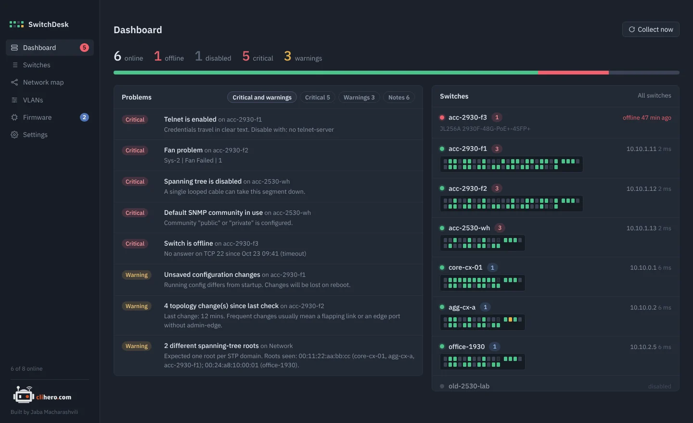
01 / Dashboard
The morning check, in one glance.
Online and offline counts, every problem sorted by severity, and each switch drawn as a faceplate with one LED per port. Green is up, grey is down, amber means spanning tree is blocking it.
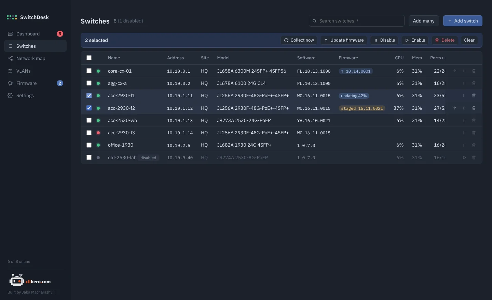
- Search that combines.
acc offlinefinds offline access switches. Press/to jump there. - Bulk actions. Tick switches to collect, update, disable or delete them together.
- Add many at once. One address per line,
name, addresspairs, or ranges like10.0.1.20-10.0.1.40.
02 / Problem checks
It notices what you'd only find one switch at a time.
Every switch is re-read on a schedule and checked against the same rules. The problems land on the dashboard, sorted by how much they matter.
Switch offline, SSH login failing, SSH host key changed since the last connect.
STP disabled, topology changes since the last check, a root chosen by default priority, more than one root in the network.
Telnet on, plain HTTP management, the default SNMP community, no manager password.
No NTP, no syslog, only local accounts, unsaved config waiting to be lost on reboot.
Fan, power supply and temperature faults, high CPU or memory.
Major and error events from the recent log, so a flapping port doesn't hide in a buffer.
03 / Switch detail
Everything a switch knows, without the CLI.
System facts, a management access checklist, spanning tree with port roles and states, ports, VLANs, LLDP and CDP neighbors, logs and the running config. A small console runs show, ping and traceroute, and nothing else.
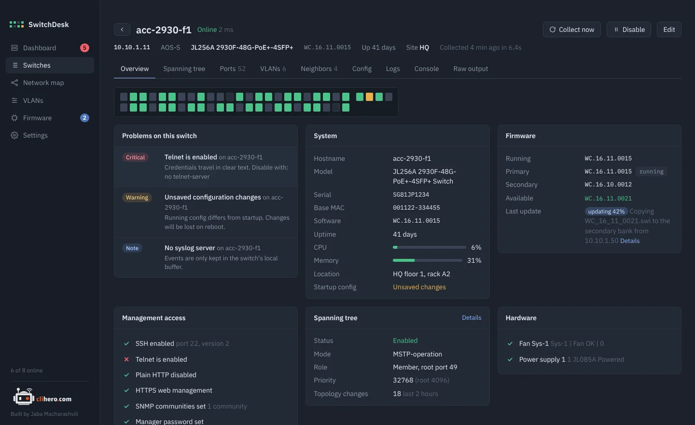
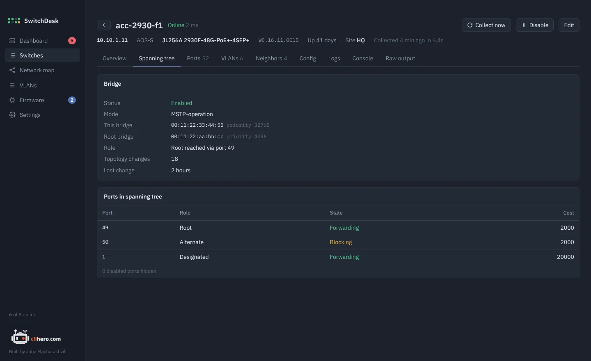
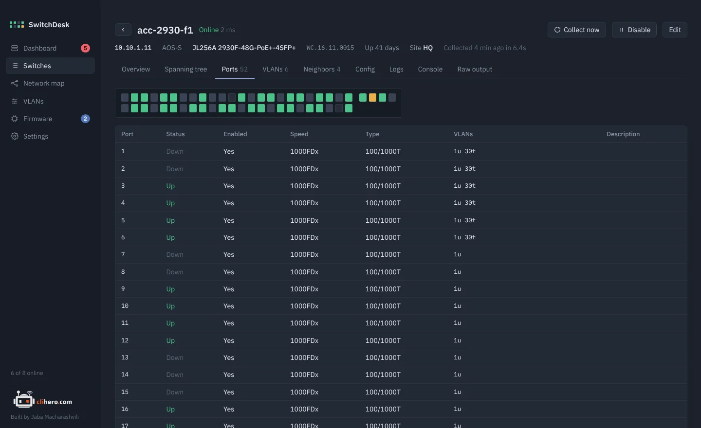
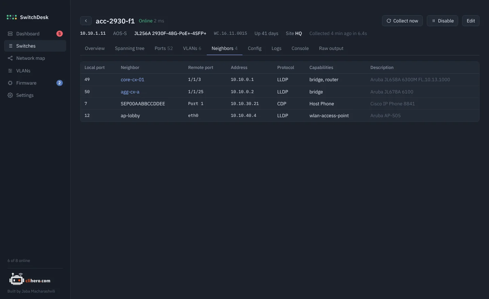
04 / VLANs
Click a port. Read the commands. Send.
Create, rename and delete VLANs, and click ports through untagged, tagged and off. You see the exact commands before anything is sent. Sending stops at the first line the switch rejects, and write memory only runs when every line went through.
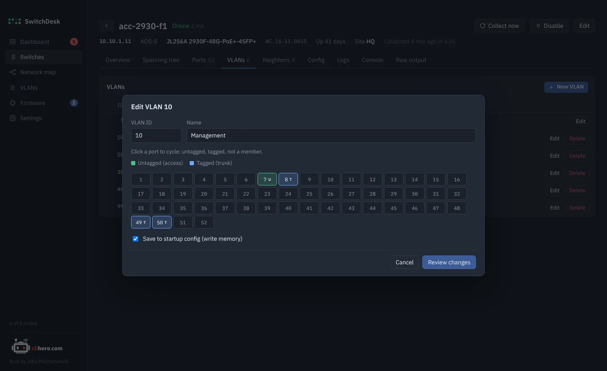
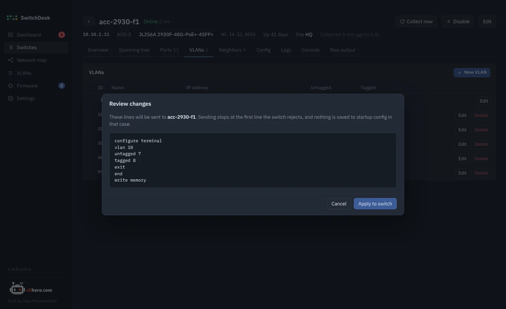
- VLAN matrix. Which switch carries which VLAN, across the whole network.
- Name drift. Flags VLANs whose names don't match between switches.
05 / Network map
A map that draws itself.
Built from LLDP and CDP and laid out top-down from the spanning-tree root. Blocked links are dashed amber, down links red. Firewalls, access points and unmanaged switches get their own shapes. Drag things around and the layout is kept.
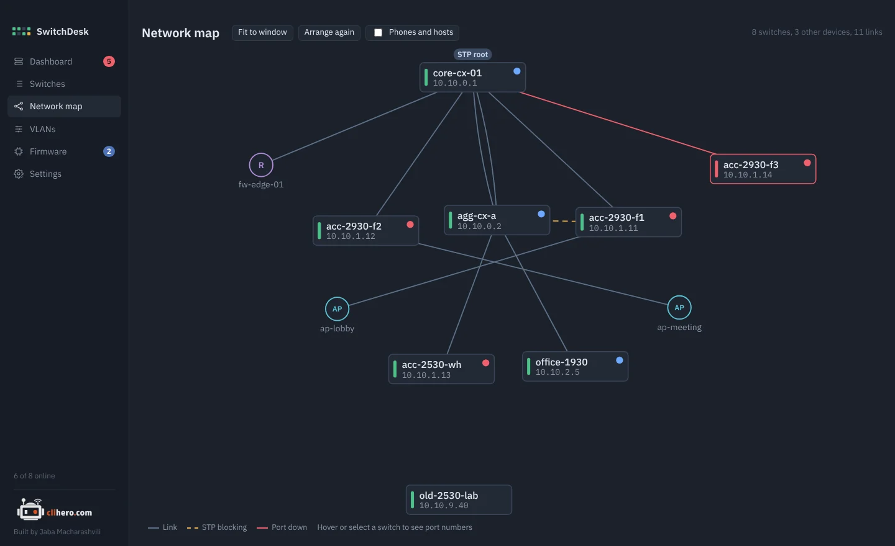
06 / Firmware
Firmware updates that check their own work.
See which switches have something newer in your firmware library, then update one or many. The image goes into the spare bank, the switch reboots, and SwitchDesk confirms it came back on the new version. Or let it run on its own inside a maintenance window.
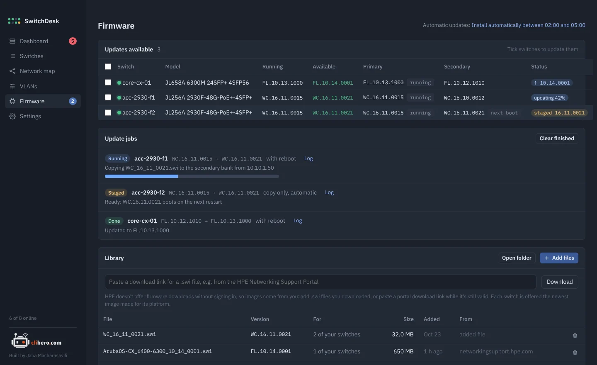
- Works over VPN and zero trust. On AOS-S the image is uploaded over SSH, so the switch never has to reach your computer.
- The old version stays. The running image is kept in the other bank as a fallback.
- Your library. Add
.swifiles or paste a download link from the HPE support portal.
07 / Config history
What changed overnight? Compare it.
A copy of the running config is saved every time it changes. Pick any two and see them side by side.
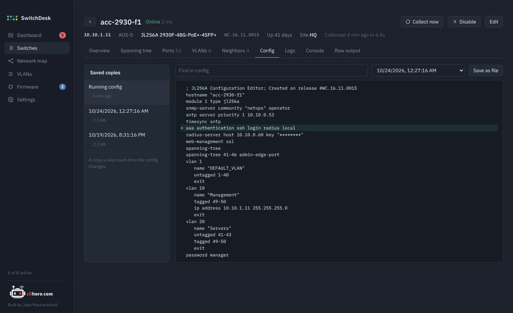
08 / Your data
On your computer. Nowhere else.
No account, no cloud, no agents on the switches. Everything lives in one folder you choose, and moving to another computer is one passphrase-protected file.
Three families. One app.
All a switch needs is SSH, plus LLDP if you want it on the map.
6000, 6100, 6200, 6300, 6400, 8xxx
2530, 2540, 2930F/M, 3810, 5400R
1830, 1930, 1960. Reachability and what the CLI shows. VLANs and firmware stay in the Instant On portal.
Pick your platform.
Free. Built from the source on GitHub by GitHub Actions on every release.
- Chip
- Apple Silicon and Intel
- Version
- Latest
- File
- .zip with SwitchDesk.app
- Size
- –
- Build
- Universal
Not notarized yet: right-click the app and choose Open the first time.
- Chip
- x64
- Version
- Latest
- File
- .zip with SwitchDesk.exe
- Size
- –
- Needs
- Windows 10 or 11
SmartScreen may warn about an unknown publisher: More info, then Run anyway.
- Language
- Go 1.23+
- UI
- Wails v2, plain HTML/JS
- Code
- github.com/jaba0x/SwitchDesk
- Tests
go test ./internal/...- Needs
- Xcode CLT on a Mac
Every switch output that's misread makes a good test case.
Frequently asked questions
Does it change anything on my switches?
Reading is read-only. It only changes config when you send a VLAN change you reviewed, run a firmware update, or set the boot bank. A firmware upload on AOS-S turns on ip ssh filetransfer for the upload and puts the previous settings back afterwards.
Do I need to install anything on the switches or a server?
No. SwitchDesk logs in over SSH like you would. There are no agents, no SNMP setup and no server. LLDP is only needed for the network map.
Where are my passwords stored?
In the data folder on your computer, encrypted with AES-GCM using a key only your user account can read. Nothing is sent anywhere else.
Will firmware updates work over a VPN or zero trust access?
Yes for AOS-S: the image is uploaded over SSH, the same connection SwitchDesk already uses. AOS-CX still pulls the image over TFTP, so the switch has to be able to reach your computer on UDP 69.
How many switches can it handle?
It's built for a few dozen to a few hundred. Reachability is checked every 30 seconds and each switch is re-read every 15 minutes; both are adjustable, as is how many switches are read at once.
It misreads my switch. What now?
Open the switch, copy what the Raw output tab shows and post it in GitHub Discussions or as an issue. That output is exactly what's needed to fix the parser.
Is this an HPE product?
No. SwitchDesk is an independent project, free to use, with its source on GitHub. Aruba, AOS-CX, ProCurve and Instant On are trademarks of Hewlett Packard Enterprise.